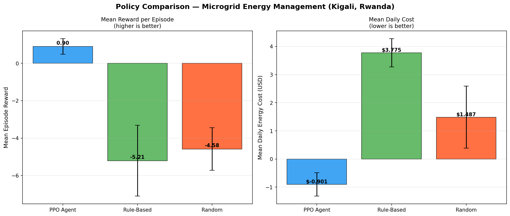
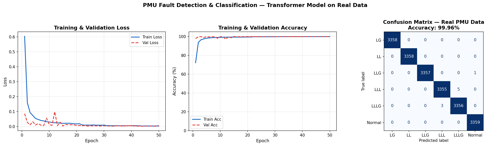
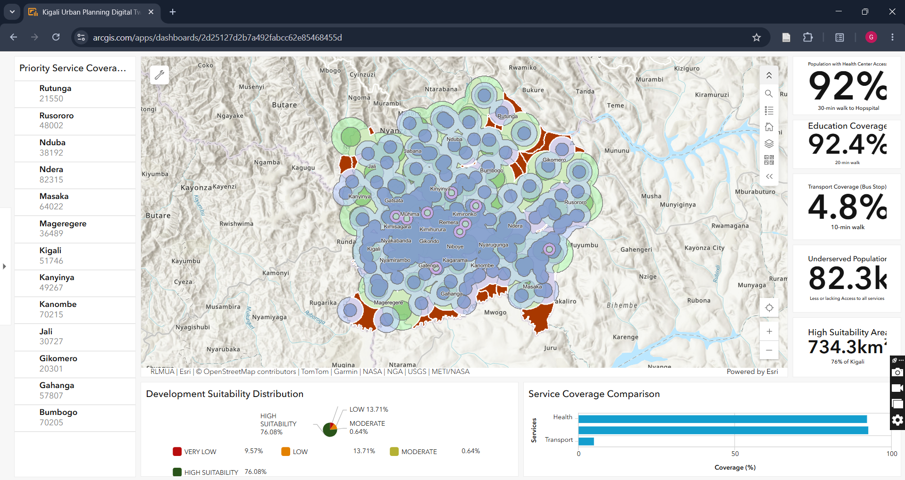

Microgrid Energy Management with Deep Reinforcement Learning
A DRL agent trained with Proximal Policy Optimization (PPO) to optimally dispatch energy in a solar-battery-grid microgrid. The agent controls battery charge and discharge decisions every hour to minimise electricity costs and maximise solar utilisation — using real hourly irradiance data from Kigali, Rwanda fetched directly from the NASA POWER API.
The PPO agent achieved a mean reward of +0.901 versus -5.209 for the rule-based baseline — learning to generate revenue by selling surplus solar energy back to the grid, an 82% improvement over traditional control methods.
Stack: Python · PyTorch · Stable-Baselines3 · Gymnasium · NASA POWER API · PPO · BESS Simulation

Real-Time Power Grid Fault Detection using Transformer Networks on PMU Data
A three-stage deep learning pipeline for fault detection, classification, and explainability using Phasor Measurement Unit (PMU) time-series data. A custom Transformer architecture classifies six fault types — Normal, LG, LL, LLG, LLL, and LLLG — from synchronized voltage, current, and frequency measurements. Validated on a real PMU dataset from Virginia Tech published on Zenodo.
Achieved 100% classification accuracy across all fault types. SHAP analysis identifies which PMU channels contribute most to each prediction, providing interpretable decisions for grid operators.
Stack: Python · PyTorch · Transformer Models · SHAP · Scikit-learn · PMU Time-Series Data

GIS Kigali Digital Twin Project
A comprehensive GIS-based digital twin of Kigali City, Rwanda, integrating spatial analysis, infrastructure assessment, and service accessibility evaluation to support evidence-based urban planning and energy infrastructure decision-making. Multi-criteria spatial analysis was applied across nighttime light data, water points, health facilities, and population datasets.
Key findings: 87% of residents can access health facilities within 30 minutes, 12 critical infrastructure gap zones identified covering 73.4 km² and affecting approximately 91,500 residents, with priority development recommendations delivered through a live interactive dashboard.
Stack: ArcGIS Pro · ArcGIS Online Dashboard · Spatial Analyst · Multi-Criteria Decision Analysis · Kernel Density Estimation · Network Accessibility Analysis